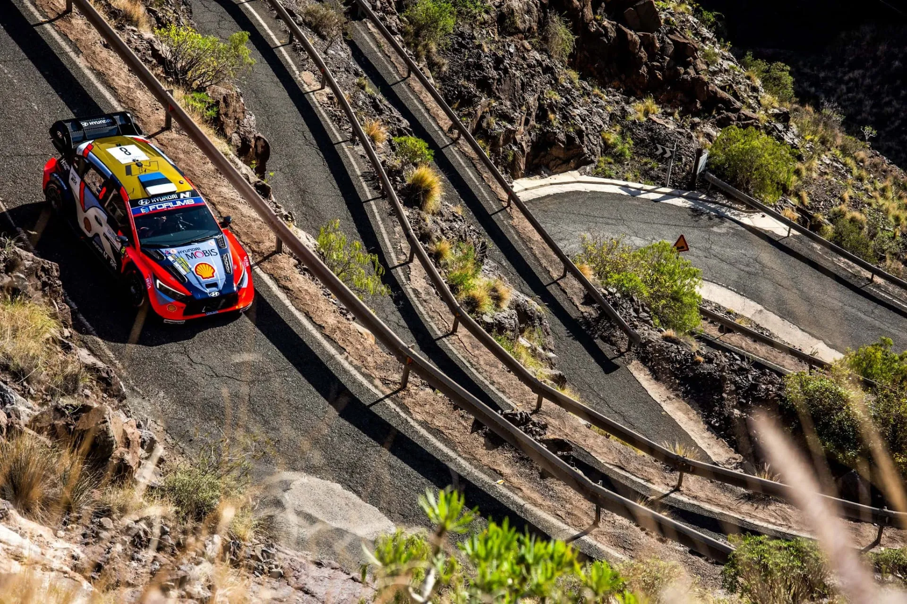
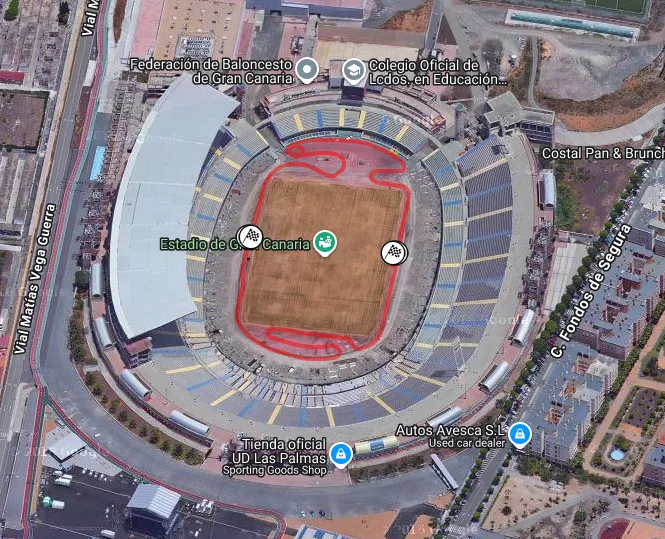
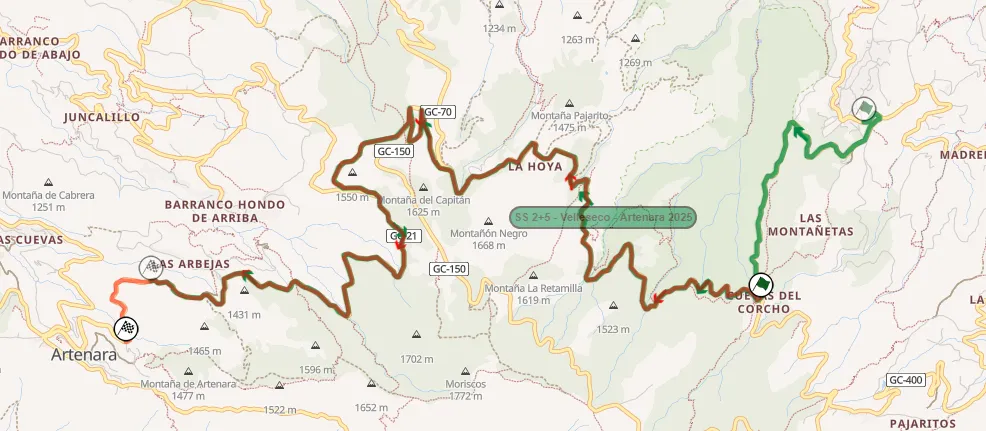
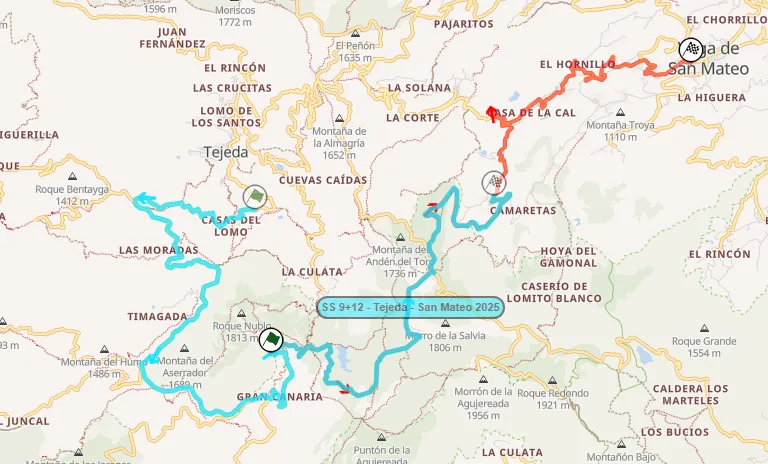
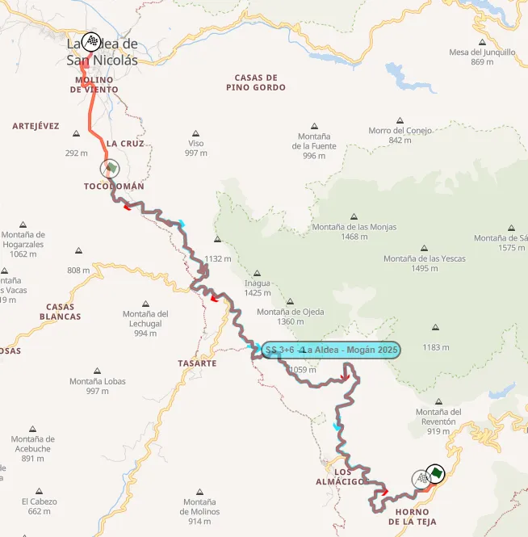
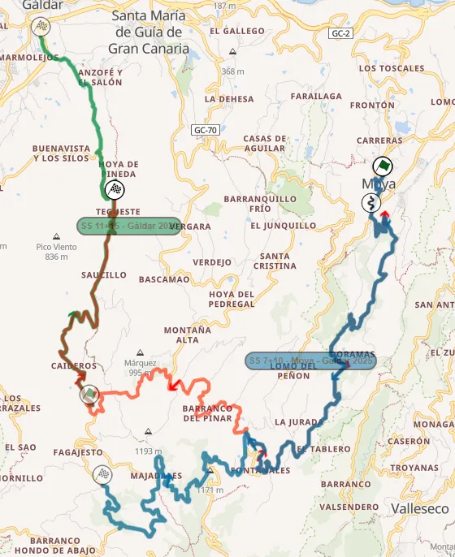
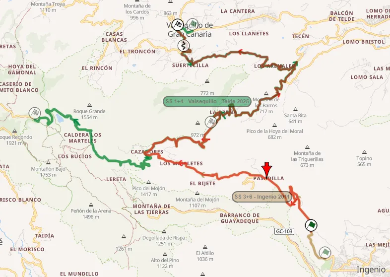
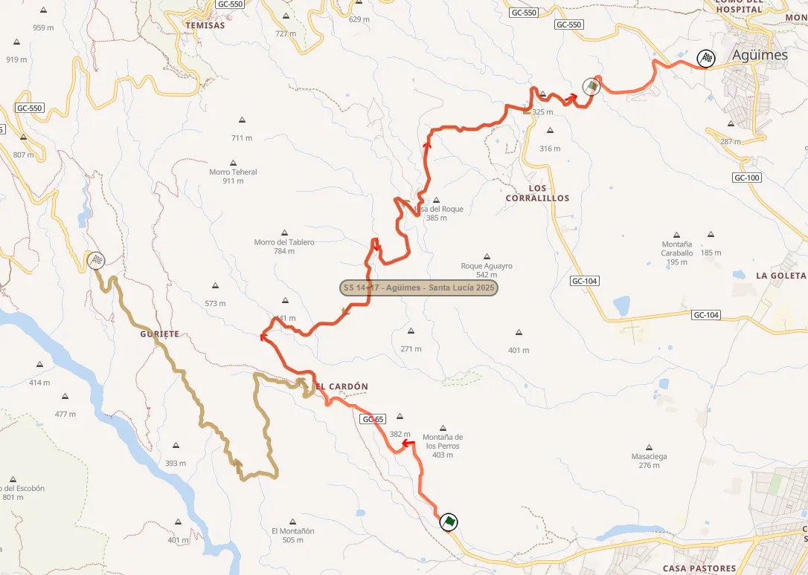

Rally Islas Canarias 2026: Route Preview
Cover and thumbnail: @ World
Maps: rally-maps.com
The 2026 edition of Rally Islas Canarias marks the 50th running of the event. The island rally features high-speed stages on a smooth tarmac surface, and it's the closest thing the championship has to circuit racing. Extreme weather conditions a few weeks before the event forced the organisers to change the itinerary slightly.
Thursday
Thursday features a pass of the Santa Brigida shakedown, which remains unchanged compared to last year, as well as a pass through the Gran Canaria Stadium SSS. Originally, the rally was due to start with the Islas Canarias Super Special Stage, which would have taken place at the location where Race of Champions event was held in the past.
Shakedown: Santa Brígida - 6.26km
Changes compared to past editions: Identical to last year's Shakedown.
Stage description: The start of the Shakedown is on a wide and smooth road, that runs through a residential area. At 1.95km, the stage turns to a narrower road that goes downhill. The stage also becomes more technical and slow until the 2.8km mark, where it becomes faster, but the surface of the road becomes more broken and bumpy.
A series of very tight hairpins follows at 4.25km, after which the road again becomes faster/medium speed. The last 700m is on a smoother surface, with mostly the same character.
SSS1/8 Gran Canaria Stadium - 1.89km
Changes compared to past editions: New Super Special Stage inside the Las Palmas FC stadium.

Stage description: The rally's opening stage is a super special inside the Gran Canaria football stadium. It features a route going round the pitch itself, with two mickey-mouse sections on either side of the goals, one of which has a donut. Following the end of the stage, the crews will make it back to service, which is just outside the stadium.
Friday
Friday was the day that saw the biggest changes due to the damage caused by the adverse weather conditions in Gran Canaria. SS2/5 Vellesco and SS4/7 Mogan were planned to be no different from last year, but that won't be the case. SS3/7 Tejeda - San Mateo saw three different layouts before settling on the final one. After the second pass of Mogan - La Aldea, there will be a second pass of the Canarias Stadium SSS.
SS2/5 Velleseco - Artenara - 13.13km
Changes compared to past editions: Last year's Velleseco - Artenara stage, only shortened from the start.

This year's stage (red) compared to last year's version (green)
Stage description: The stage now starts on a twisty and technical road, which is smooth. At 9km, the route turns to a very narrow road via an acute hairpin.
It rejoins the previous road after 700m, with another hairpin. After that, the stage goes downhill, and is faster than before, but still technical and narrow, with the mountain on one side and the armco barrier on the other.
SS3/6 Tejeda - San Mateo - 18.62km
Changes compared to past editions: Compared to last year, it uses the latter half of the Tejeda stage, after which it continues down a road never used before in this direction, until San Mateo.

This year's stage (red) compared to last year's Tejeda (light blue)
Stage description: The start of the stage is on a wide and smooth road inside a forest, that is technical, with many fast and medium speed corners. It then transitions onto a flat-out section that lasts for about three kilometers, after which there is a series of hairpins. The route then joins a new road, which is flowing, and heads downhill, with many fast and medium-speed corners.
The last six and a half kilometers of the test are inside a residential area, with the route passing next to houses. The road itself is more technical, with some more slower corners, while also becoming narrower near the finish.
SS4/7 Mogán - La Aldea - 21.70km
Changes compared to past editions: A longer version of last year's La Aldea - Mogán, reversed, and extended by four kilometers from the finish.

This year's stage (red) compared to 2025 version (light blue)
Stage description: The stage kicks off with a kilometer and a half uphill climb on a twisty road, immediately followed by a 3-kilometer descent that with the same technical character. After covering these initial 4.5 kilometers, the road widens and opens up into a fast section with long, high-speed corners.
Following that, the road becomes more narrow and turns into an uphill climb. This technical yet fast section is arguably the most exciting part of the stage, winding its way upward for about 3.5 kilometers.
Following a tight turn, the crews tackle a 5-kilometer downhill stretch featuring mostly long, fast, and medium-speed corners. Carving its way along the mountainside, this smooth and wide section will provide some nice shots.
With about four kilometers to go, the smooth and wide tarmac ends, as the route heads into La Aldea village. In there it becomes narrow and broken in places, but remains mostly fast all the way to the finish.
Saturday
Just like Friday, it features two passes of three repeated stages. Maspalomas, last year's power stage, features as the day's opener, with Terror next, remaining unchanged compared to 2025, and Moya - Galdar, which is the longest of the rally, and has a new finish.
SS 9/12 Maspalomas - 13.47km
Changes compared to past editions: The same as last year's Power Stage.
Stage description: The start of the stage is very fast, with fast flowing corners, on a wide semi-broken road. The road becomes narrower and more medium speed at 5km, with the stage carving its way up the mountain, having a steep drop on one side. At 7.36km the character of the stage becomes more technical, having a series of hairpins afterwards, at 8km.
At 8.75km the stage passes next to a viewing point, with the road becoming wider momentarily, and going downhill afterwards. The last 5km are on a medium-wide and fast road, passing next to a theme park at 9.9km, before the stage finish near the Maspalomas cemetery.
SS10/13 Arucas - Teror - 13.74km
Changes compared to past editions: Identical to last year's Arucas - Terror stage. Gregoire Munster had an off-road moment here last year.
Stage description: The stage starts off with a donut just 0.5km after the start, with the first few kilometers being on a medium wide and fast road, with a handful of medium speed corners. The road is patchy at first, but smoothens out afterwards, and is semi-broken almost until the finish.
Unlike the previous stage, there's more vegetation near the road compared to a typical Canarias stage. At 4.8km there is a junction that leads to a slightly narrower road, that is twistier, more technical, and has cambered turns, which allow the cars to carry more speed through the corners.
At 10km there's a hairpin that leads to the final section of the stage. The road is smoother now, and goes downhill. There's a series of hairpins, that are again cambered, and are well known with the locals. The finish of the stage is just before the town of Teror.
SS11/14 Moya - Galdar - 28.90km
Changes compared to past editions: A combination of last year's stage with the same name, as well as the Galdar test which was used in the rally in 2020 and 2023.
The mid-section connecting the two was last used in the rally back in the late 1990s.

This year's stage (red) compared to last year's (dark blue) and the Galdar stage from 2020 (green)
Stage description: Just like last year, the stage starts off with a section inside the town of Moya, in a series of narrow roads, with a donut also at 0.6km. It climbs uphill, reaching an altitude of 1100m near the town of Fontanales.
At 1.3km, the stage turns to a new road, in a forest, which is initially technical, but then becomes faster. Just like Arucas - Terror, this test has a lot more forested sections. There is a pass through the town of Fontanales at 11.3km, where there is a very narrow section inside the village.
For the next 6km, the stage is quite twisty, constantly passing next to residential areas, with the road surface also becoming quite broken in places. It remains flowing, with also many elevation changes. At 17km the route enters a forested section momentarily, after which the road becomes worn and broken. Following a junction at 21.7km, the stage joins a freshly paved road, which is faster, also featuring a crest at 23km, after which it becomes narrower.
The rest of the stage is generally high-speed, with the exception of a more technical section from 27.3km to the finish, with a series of hairpins and slow corners.
Sunday
The last day of the rally is comprised of two stages, repeated twice. Ingenio - Valsequillo is a long stage and is mostly last year's opening stage but in reverse, and Santa Lucia - Agüimes, the rally's power stage, is run in reverse, and with a new start, compared to 2025.
SS16/18 Ingenio - Valsequillo - 26.49km
Changes compared to past editions: The stage is essentially last year's opening stage, Valsequillo - Telde, in reverse, with a new start. The start was last used in the rally in 2016, as part of SS Ingenio.

Ingenio - Valsequillo (red) compared to last year's route (red) and the 2011 Ingenio stage (cream)
Stage description: The new start is on a picturesque uphill road, which is generally narrow and on a smooth surface. Apart from a sequence of tight corners 1.5km in, it's mostly high-speed. There's a passage through the village of Pasadilla, after which the road has a short section with a couple of crests, before becoming twistier and more technical. The stage then joins the route of the 2025 test at 9.25km, after a very narrow section.
After that the road becomes wide and smooth, heading downhill from 9 to 18km. In that section the stage is generally quite high-speed and flowing. Following a junction at 18km, the route joins a road that is narrower but still smooth at first, but then turns onto a broken and even narrower one shortly after. After navigating some sections with houses nearby, it becomes uphill, remaining narrow and broken, while also very technical in places. The last kilometer or so, is again on a wide and smooth road.
SS17/19 Santa Lucia - Agüimes - 13.27km
Changes compared to past editions: The stage sees parts of last year's Agüimes - Santa Lucía reversed, with a new start, which was last used in 2021, as part of SS Santa Lucía. Josh McErlean crashed here on Sunday last year.
You can drive sections of this stage in Richard Burns Rally. The first 2.85km are part of the Santa Lucia II test, with the rest being part of Era del Cardon II.

This year's Power Stage (red) compared to last year's Agüimes - Santa Lucía (brown)
Stage description: Santa Lucía starts off with an uphill section on a wide and smooth road, which features a mix of medium speed and fast corners. At 2.85km, there's the Era del Cardon junction, where the test joins the route of the 2025 Agüimes - Santa Lucía test, only in reverse.
Following that, the stage becomes more technical, with mostly medium speed corners, as the route carves its way on the mountain side. At 6.02km, there's a big crest which is immediately followed by a hairpin, which will be very tricky.
Onboard of most of the Era del Cardon section from 2.85 to 9.85km
From 8.4 to 10km there's a technical downhill section, with the end of the stage featuring medium to high-speed long corners.
What I would change
I am not a huge fan of the Islas Canarias Rally, as I think it tends to give more boring rallies due to the character of the stages. If I was to change the itinerary, I would add more technical stages. For example, I really like the Artenara - Acusa stage that was used in the early 2000s. I also prefered the version of Tejeda which was set to pass through Ariñez.
I made an alternate version here: https://www.mapfab.com/map/AlQN/Canarias-Concept


Comments